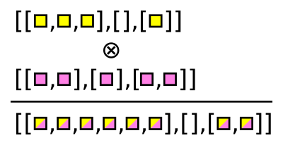
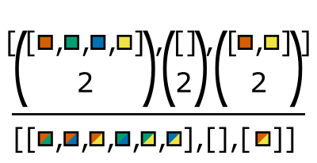
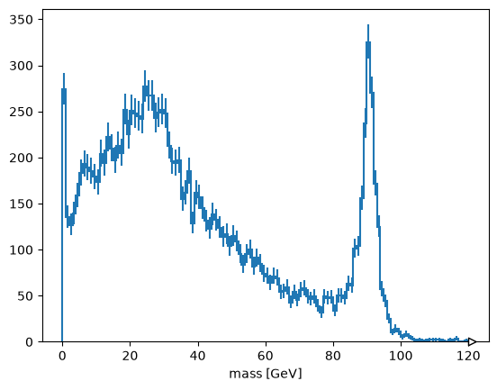
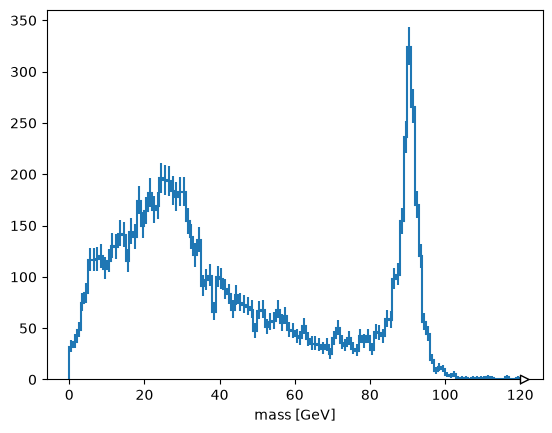
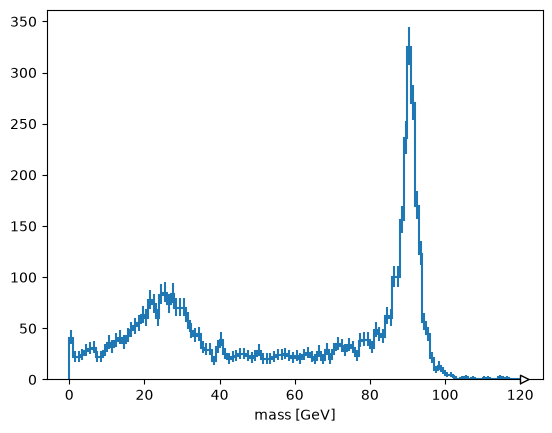

Jagged, Ragged, Awkward Arrays!#
Originally presented as part of HSF Scikit-HEP training on March 28, 2022.
NumPy can’t represent an array of variable-length lists without resorting to arrays of objects.
import numpy as np
# generates a ValueError
np.array([[0.0, 1.1, 2.2], [], [3.3, 4.4], [5.5], [6.6, 7.7, 8.8, 9.9]])
---------------------------------------------------------------------------
ValueError Traceback (most recent call last)
Cell In[1], line 4
1 import numpy as np
2
3 # generates a ValueError
----> 4 np.array([[0.0, 1.1, 2.2], [], [3.3, 4.4], [5.5], [6.6, 7.7, 8.8, 9.9]])
ValueError: setting an array element with a sequence. The requested array has an inhomogeneous shape after 1 dimensions. The detected shape was (5,) + inhomogeneous part.
Awkward Array is intended to fill this gap:
import awkward as ak
ak.Array([[0.0, 1.1, 2.2], [], [3.3, 4.4], [5.5], [6.6, 7.7, 8.8, 9.9]])
[[0, 1.1, 2.2], [], [3.3, 4.4], [5.5], [6.6, 7.7, 8.8, 9.9]] ---------------------- backend: cpu nbytes: 128 B type: 5 * var * float64
Arrays like this are sometimes called “jagged arrays” and sometimes “ragged arrays.”
Slicing in Awkward Array#
Basic slices are a generalization of NumPy’s—what NumPy would do if it had variable-length lists.
array = ak.Array([[0.0, 1.1, 2.2], [], [3.3, 4.4], [5.5], [6.6, 7.7, 8.8, 9.9]])
array
[[0, 1.1, 2.2], [], [3.3, 4.4], [5.5], [6.6, 7.7, 8.8, 9.9]] ---------------------- backend: cpu nbytes: 128 B type: 5 * var * float64
array[2]
[3.3, 4.4] ----- backend: cpu nbytes: 16 B type: 2 * float64
array[-1, 1]
np.float64(7.7)
array[2:, 0]
[3.3, 5.5, 6.6] ----- backend: cpu nbytes: 24 B type: 3 * float64
array[2:, 1:]
[[4.4], [], [7.7, 8.8, 9.9]] ----------------- backend: cpu nbytes: 64 B type: 3 * var * float64
array[:, 0]
---------------------------------------------------------------------------
IndexError Traceback (most recent call last)
Cell In[8], line 1
----> 1 array[:, 0]
File ~/micromamba/envs/awkward-docs/lib/python3.11/site-packages/awkward/highlevel.py:1106, in Array.__getitem__(self, where)
677 def __getitem__(self, where):
678 """
679 Args:
680 where (many types supported; see below): Index of positions to
(...) 1104 have the same dimension as the array being indexed.
1105 """
-> 1106 with ak._errors.SlicingErrorContext(self, where):
1107 # Handle named axis
1108 (_, ndim) = self._layout.minmax_depth
1109 named_axis = _get_named_axis(self)
File ~/micromamba/envs/awkward-docs/lib/python3.11/site-packages/awkward/_errors.py:80, in ErrorContext.__exit__(self, exception_type, exception_value, traceback)
78 self._slate.__dict__.clear()
79 # Handle caught exception
---> 80 raise self.decorate_exception(exception_type, exception_value)
81 else:
82 # Step out of the way so that another ErrorContext can become primary.
83 if self.primary() is self:
File ~/micromamba/envs/awkward-docs/lib/python3.11/site-packages/awkward/highlevel.py:1114, in Array.__getitem__(self, where)
1110 where = _normalize_named_slice(named_axis, where, ndim)
1112 NamedAxis.mapping = named_axis
-> 1114 indexed_layout = prepare_layout(self._layout._getitem(where, NamedAxis))
1116 if NamedAxis.mapping:
1117 return ak.operations.ak_with_named_axis._impl(
1118 indexed_layout,
1119 named_axis=NamedAxis.mapping,
(...) 1122 attrs=self._attrs,
1123 )
File ~/micromamba/envs/awkward-docs/lib/python3.11/site-packages/awkward/contents/content.py:651, in Content._getitem(self, where, named_axis)
642 named_axis.mapping = _named_axis
644 next = ak.contents.RegularArray(
645 this,
646 this.length,
647 1,
648 parameters=None,
649 )
--> 651 out = next._getitem_next(nextwhere[0], nextwhere[1:], None)
653 if out.length is not unknown_length and out.length == 0:
654 return out._getitem_nothing()
File ~/micromamba/envs/awkward-docs/lib/python3.11/site-packages/awkward/contents/regulararray.py:595, in RegularArray._getitem_next(self, head, tail, advanced)
589 nextcontent = self._content._carry(nextcarry, True)
591 if advanced is None or (
592 advanced.length is not unknown_length and advanced.length == 0
593 ):
594 return RegularArray(
--> 595 nextcontent._getitem_next(nexthead, nexttail, advanced),
596 nextsize,
597 self.length,
598 parameters=self._parameters,
599 )
600 else:
601 nextadvanced = ak.index.Index64.empty(nextcarry.length, nplike)
File ~/micromamba/envs/awkward-docs/lib/python3.11/site-packages/awkward/contents/listarray.py:760, in ListArray._getitem_next(self, head, tail, advanced)
754 head = ak._slicing.normalize_integer_like(head)
755 assert (
756 nextcarry.nplike is self._backend.nplike
757 and self._starts.nplike is self._backend.nplike
758 and self._stops.nplike is self._backend.nplike
759 )
--> 760 self._maybe_index_error(
761 self._backend[
762 "awkward_ListArray_getitem_next_at",
763 nextcarry.dtype.type,
764 self._starts.dtype.type,
765 self._stops.dtype.type,
766 ](
767 nextcarry.data,
768 self._starts.data,
769 self._stops.data,
770 lenstarts,
771 head,
772 ),
773 slicer=head,
774 )
775 nextcontent = self._content._carry(nextcarry, True)
776 return nextcontent._getitem_next(nexthead, nexttail, advanced)
File ~/micromamba/envs/awkward-docs/lib/python3.11/site-packages/awkward/contents/content.py:297, in Content._maybe_index_error(self, error, slicer)
295 else:
296 message = self._backend.format_kernel_error(error)
--> 297 raise ak._errors.index_error(self, slicer, message)
IndexError: cannot slice ListArray (of length 5) with array(0): index out of range while attempting to get index 0 (in compiled code: https://github.com/scikit-hep/awkward/blob/awkward-cpp-54/awkward-cpp/src/cpu-kernels/awkward_ListArray_getitem_next_at.cpp#L21)
This error occurred while attempting to slice
<Array [[0, 1.1, 2.2], ..., [6.6, 7.7, ..., 9.9]] type='5 * var * float64'>
with
(:, 0)
Quick quiz: why does the last one raise an error?
Boolean and integer slices work, too:
array[[True, False, True, False, True]]
[[0, 1.1, 2.2], [3.3, 4.4], [6.6, 7.7, 8.8, 9.9]] ---------------------- backend: cpu nbytes: 128 B type: 3 * var * float64
array[[2, 3, 3, 1]]
[[3.3, 4.4], [5.5], [5.5], []] ------------ backend: cpu nbytes: 144 B type: 4 * var * float64
Like NumPy, boolean arrays for slices can be computed, and functions like ak.num are helpful for that.
ak.num(array)
[3, 0, 2, 1, 4] --- backend: cpu nbytes: 40 B type: 5 * int64
ak.num(array) > 0
[True, False, True, True, True] ------- backend: cpu nbytes: 5 B type: 5 * bool
array[ak.num(array) > 0, 0]
[0, 3.3, 5.5, 6.6] ----- backend: cpu nbytes: 32 B type: 4 * float64
array[ak.num(array) > 1, 1]
[1.1, 4.4, 7.7] ----- backend: cpu nbytes: 24 B type: 3 * float64
Now consider this (similar to an example from the first lesson):
cut = array * 10 % 2 == 0
cut
[[True, False, True], [], [False, True], [False], [True, False, True, False]] ---------------------------- backend: cpu nbytes: 58 B type: 5 * var * bool
array[cut]
[[0, 2.2], [], [4.4], [], [6.6, 8.8]] ------------ backend: cpu nbytes: 88 B type: 5 * var * float64
This array, cut, is not just an array of booleans. It’s a jagged array of booleans. All of its nested lists fit into array’s nested lists, so it can deeply select numbers, rather than selecting lists.
Application: selecting particles, rather than events#
Returning to the big TTree from the previous lesson,
import uproot
file = uproot.open(
"https://github.com/jpivarski-talks/2023-12-18-hsf-india-tutorial-bhubaneswar/raw/main/data/SMHiggsToZZTo4L.root"
)
tree = file["Events"]
muon_pt = tree["Muon_pt"].array(entry_stop=10)
This jagged array of booleans selects all muons with at least 20 GeV:
particle_cut = muon_pt > 20
muon_pt[particle_cut]
[[63, 38.1], [], [], [54.3, 23.5, 52.9], [], [38.5, 47], [], [], [], []] -------------------- backend: cpu nbytes: 116 B type: 10 * var * float32
and this non-jagged array of booleans (made with ak.any) selects all events that have a muon with at least 20 GeV:
event_cut = ak.any(muon_pt > 20, axis=1)
muon_pt[event_cut]
[[63, 38.1, 4.05], [54.3, 23.5, 52.9, 4.33, 5.35, 8.39, 3.49], [38.5, 47]] -------------------------------------------- backend: cpu nbytes: 100 B type: 3 * var * float32
Quick quiz: construct exactly the same event_cut using ak.max.
Quick quiz: apply both cuts; that is, select muons with over 20 GeV from events that have them.
Hint: you’ll want to make a
cleaned = muon_pt[particle_cut]
intermediary and you can’t use the variable event_cut, as-is.
Hint: the final result should be a jagged array, just like muon_pt, but with fewer lists and fewer items in those lists.
Combinatorics in Awkward Array#
Variable-length lists present more problems than just slicing and computing formulas array-at-a-time. Often, we want to combine particles in all possible pairs (within each event) to look for decay chains.
Pairs from two arrays, pairs from a single array#
Awkward Array has functions that generate these combinations. For instance, ak.cartesian takes a Cartesian product per event (when axis=1, the default).

numbers = ak.Array([[1, 2, 3], [], [5, 7], [11]])
letters = ak.Array([["a", "b"], ["c"], ["d"], ["e", "f"]])
pairs = ak.cartesian((numbers, letters))
These pairs are 2-tuples, which are like records in how they’re sliced out of an array: using strings.
pairs["0"]
[[1, 1, 2, 2, 3, 3], [], [5, 7], [11, 11]] -------------------- backend: cpu nbytes: 120 B type: 4 * var * int64
pairs["1"]
[['a', 'b', 'a', 'b', 'a', 'b'], [], ['d', 'd'], ['e', 'f']] -------------------------------- backend: cpu nbytes: 206 B type: 4 * var * string
There’s also ak.unzip, which extracts every field into a separate array (opposite of ak.zip).
lefts, rights = ak.unzip(pairs)
lefts
[[1, 1, 2, 2, 3, 3], [], [5, 7], [11, 11]] -------------------- backend: cpu nbytes: 120 B type: 4 * var * int64
rights
[['a', 'b', 'a', 'b', 'a', 'b'], [], ['d', 'd'], ['e', 'f']] -------------------------------- backend: cpu nbytes: 206 B type: 4 * var * string
Note that these lefts and rights are not the original numbers and letters: they have been duplicated and have the same shape.
The Cartesian product is equivalent to this C++ for loop over two collections:
for (int i = 0; i < numbers.size(); i++) {
for (int j = 0; j < letters.size(); j++) {
// compute formula with numbers[i] and letters[j]
}
}
Sometimes, though, we want to find all pairs within a single collection, without repetition. That would be equivalent to this C++ for loop:
for (int i = 0; i < numbers.size(); i++) {
for (int j = i + 1; i < numbers.size(); j++) {
// compute formula with numbers[i] and numbers[j]
}
}
The Awkward function for this case is ak.combinations.

pairs = ak.combinations(numbers, 2)
pairs
[[(1, 2), (1, 3), (2, 3)],
[],
[(5, 7)],
[]]
--------------------------
backend: cpu
nbytes: 104 B
type: 4 * var * (
int64,
int64
)lefts, rights = ak.unzip(pairs)
lefts * rights # they line up, so we can compute formulas
[[2, 3, 6], [], [35], []] ----------- backend: cpu nbytes: 72 B type: 4 * var * int64
Application to dimuons#
The dimuon search in the previous lesson was a little naive in that we required exactly two muons to exist in every event and only computed the mass of that combination. If a third muon were present because it’s a complex electroweak decay or because something was mismeasured, we would be blind to the other two muons. They might be real dimuons.
A better procedure would be to look for all pairs of muons in an event and apply some criteria for selecting them.
In this example, we’ll ak.zip the muon variables together into records.
import uproot
import awkward as ak
file = uproot.open(
"https://github.com/jpivarski-talks/2023-12-18-hsf-india-tutorial-bhubaneswar/raw/main/data/SMHiggsToZZTo4L.root"
)
tree = file["Events"]
arrays = tree.arrays(filter_name="/Muon_(pt|eta|phi|charge)/", entry_stop=10000)
muons = ak.zip(
{
"pt": arrays["Muon_pt"],
"eta": arrays["Muon_eta"],
"phi": arrays["Muon_phi"],
"charge": arrays["Muon_charge"],
}
)
arrays.type.show()
10000 * {
Muon_pt: var * float32,
Muon_eta: var * float32,
Muon_phi: var * float32,
Muon_charge: var * int32
}
muons.type.show()
10000 * var * {
pt: float32,
eta: float32,
phi: float32,
charge: int32
}
The difference between arrays and muons is that arrays contains separate lists of "Muon_pt", "Muon_eta", "Muon_phi", "Muon_charge", while muons contains lists of records with "pt", "eta", "phi", "charge" fields.
Now we can compute pairs of muon objects
pairs = ak.combinations(muons, 2)
pairs.type.show()
10000 * var * (
{
pt: float32,
eta: float32,
phi: float32,
charge: int32
},
{
pt: float32,
eta: float32,
phi: float32,
charge: int32
}
)
and separate them into arrays of the first muon and the second muon in each pair.
mu1, mu2 = ak.unzip(pairs)
Quick quiz: how would you ensure that all lists of records in mu1 and mu2 have the same lengths? Hint: see ak.num and ak.all.
Since they do have the same lengths, we can use them in a formula.
import numpy as np
mass = np.sqrt(
2 * mu1.pt * mu2.pt * (np.cosh(mu1.eta - mu2.eta) - np.cos(mu1.phi - mu2.phi))
)
Quick quiz: how many masses do we have in each event? How does this compare with muons, mu1, and mu2?
Plotting the jagged array#
Since this mass is a jagged array, it can’t be directly histogrammed. Histograms take a set of numbers as inputs, but this array contains lists.
Supposing you just want to plot the numbers from the lists, you can use ak.flatten to flatten one level of list or ak.ravel to flatten all levels.
import hist
hist.Hist(hist.axis.Regular(120, 0, 120, label="mass [GeV]")).fill(
ak.ravel(mass)
).plot()
None

Alternatively, suppose you want to plot the maximum mass-candidate in each event, biasing it toward Z bosons? ak.max is a different function that picks one element from each list, when used with axis=1.
ak.max(mass, axis=1)
[89.5, None, None, 98.7, None, 87.1, None, None, None, None, ..., 90.6, 12, None, None, 91.7, None, None, None, 15.6] ------ backend: cpu nbytes: 50.0 kB type: 10000 * ?float32
Some values are None because there is no maximum of an empty list. ak.flatten/ak.ravel remove missing values (None) as well as squashing lists,
ak.flatten(ak.max(mass, axis=1), axis=0)
[89.5, 98.7, 87.1, 90.5, 89.2, 18.8, 94.5, 8.54, 4.57, 31.6, ..., 88.3, 93.3, 86.9, 92.6, 101, 90.6, 12, 91.7, 15.6] ------ backend: cpu nbytes: 19.3 kB type: 4825 * float32
but so does removing the empty lists in the first place.
ak.max(mass[ak.num(mass) > 0], axis=1)
[89.5, 98.7, 87.1, 90.5, 89.2, 18.8, 94.5, 8.54, 4.57, 31.6, ..., 88.3, 93.3, 86.9, 92.6, 101, 90.6, 12, 91.7, 15.6] ------ backend: cpu nbytes: 24.1 kB type: 4825 * ?float32
Exercise: select pairs of muons with opposite charges#
This is neither an event-level cut nor a particle-level cut, it is a cut on particle pairs.
Solution#
The mu1 and mu2 variables are the left and right halves of muon pairs. Therefore,
cut = (mu1.charge != mu2.charge)
has the right multiplicity to be applied to the mass array.
hist.Hist(hist.axis.Regular(120, 0, 120, label="mass [GeV]")).fill(
ak.ravel(mass[cut])
).plot()
None

plots the cleaned muon pairs.
Exercise (harder): plot the one mass candidate per event that is strictly closest to the Z mass#
Instead of just taking the maximum mass in each event, find the one with the minimum difference between computed mass and zmass = 91.
Hint: use ak.argmin with keepdims=True.
Anticipating one of the future lessons, you could get a more accurate mass by asking the Particle library:
import particle, hepunits
zmass = particle.Particle.findall("Z0")[0].mass / hepunits.GeV
Solution#
Instead of maximizing mass, we want to minimize abs(mass - zmass) and apply that choice to mass. ak.argmin returns the index position of this minimum difference, which we can then apply to the original mass. However, without keepdims=True, ak.argmin removes the dimension we would need for this array to have the same nested shape as mass. Therefore, we keepdims=True and then use ak.ravel to get rid of missing values and flatten lists.
The last step would require two applications of ak.flatten: one for squashing lists at the first level and another for removing None at the second level.
which = ak.argmin(abs(mass - zmass), axis=1, keepdims=True)
hist.Hist(hist.axis.Regular(120, 0, 120, label="mass [GeV]")).fill(
ak.flatten(mass[which], axis=None)
).plot()
None
